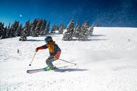
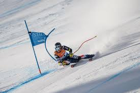
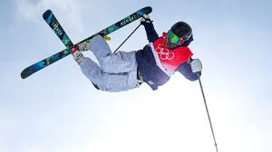
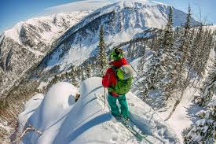
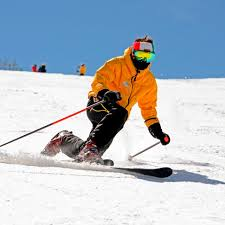
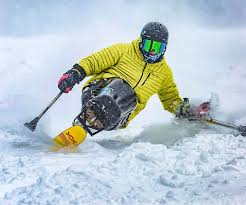
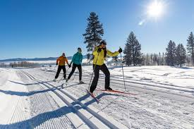

All types of Skiing
Downhill Skiing

Downhill skiing is the most common form of skiing. This type of skiing is familiar with most skier.
Downhill skiing involves the participant to ski down marked trails within a ski resort. This gives the skier a
safe and controlled environment while also giving the skier the thrill and excitement of gliding down a slope.
Ski.com
Alpine Ski Racing

Alpine ski racing is a thrilling and competitive form of skiing. This form of skiing requires expert level
skiing as it is very fast, demanding and dangerous. Ski racing involves skiing down a steep slope while
navigating through a course with "gates". The skiers objective is the finish the course in the fastest time possible
without being disqualified. Ski racing has multiple different disciplines which vary in speed and technicality.
Ski.com
Freestyle Skiing

Freestyle skiing is an exciting and creative form of skiing. This skiing requires expert skill as the participants
perform various tricks down a slope. The tricks can come from jumps, rails and other extreme terrain features.
Many ski resorts have terrain parks for recreational freestyle skiing, while some freestyle skiers take it past the
terrain park and compete in freestyle events.
Ski.com
Backcounrty Skiing

Backcountry skiing is a type of skiing where the participants venture out of bounds. This means that the skier
leaves the traditional area of the ski resort and ventures through unmarked and unpatrolled areas.
This type of skiing allows the skier to explore untouched terrain, but also comes with increased risks!
Ski.com
Telemark Skiing

Telemark skiing is a unique form of skiing where the skier uses a different technique to turn.
The skiers heel is not fixed to the ski and the skier is able to lunge their ski forward while turning.
This creates a unique and beautiful style of skiing.
Ski.com
Adaptive Skiing

Adaptive skiing is a form of skiing that allows individuals with disabilities to access the sport of skiing.
This form of skiing requires specialized equipment to accommodate for various disabilities.
Adaptive skiing includes a multiple of different techniques. The most common form is sit-skiing, allowing the
participant to ski sitting down.
Ski.com
Nordic Skiing

Nordic skiing, also known as cross-country skiing, is a form of skiing where the participant skis across
a mostly flat terrain. This form of skiing is also done recreationally and competitively.
Nordic skiing requires great endurance just as cross-country running does.
Ski.com